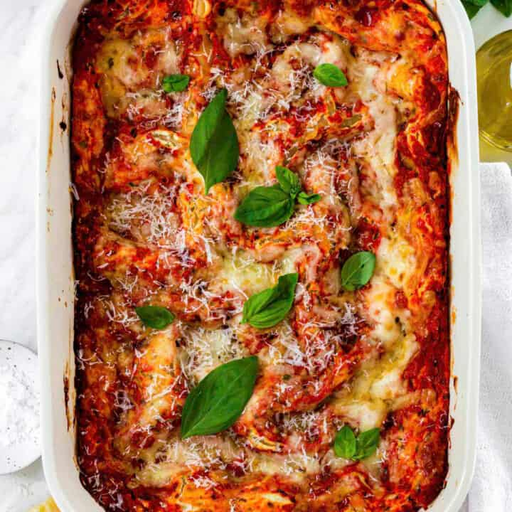

Meatless 3 Chees Lasagna
This lasagna takes one hour, but it is completely worth it. It does not matter if you are vegetarian or not, you will enjoy this recipe either way.

Ingredients:
For the Ricotta Filling:
- 16 oz Ricotta
- 1 Large Egg
- 1/4 cup Shredded Mozzarella
- 1/4 cup Grated Romano or Parmesan Cheese
- 1/4 cup Fresh Parsely Leaves
- 1/4 teaspoon Garlic Powder
- Fine Sea Salt to taste
- Fresh Ground Black Pepper to taste
For the Lasagna
- 9 oz Dry Lasagna Sheets
- 35 oz Marinara
- 2 1/2 cups Shredded Mozzarella
- 1/2 cup Grated Parmesan
Instructions
- Preheat oven to 400 degrees Farhenheit and prepare a 13x9 inch baking dish
- First, make the ricotta filling. To a bowl, add ricotta cheese, mozzarella and parmesan cheese, an egg, parsley, and spices. Using a spatula, mix until creamy and smooth and the egg is fully incorporated.
- To layer the lasagna, add a generous amount of marinara sauce at the bottom to cover it well (~1/2 cup). Then, add your lasagna sheets (if your baking dish is too small, you may have to break some pieces to cover the bottom of the dish fully).
- Then, add 1/3 of the ricotta mixture and spread it evenly. Add a few tablespoons of mozzarella cheese all over. Continue layering the lasagna in this order- adding tomato sauce, then noodles, then spreading the ricotta mixture and topping it with shredded mozzarella, until you've used all of the ricotta mixture. In the end, you should have 3 layers in total.
- After the last layer, top the lasagna with a generous amount of shredded mozzarella cheese and grated parmesan cheese (optional) and bake for 40-45 minutes, or until the noodles are cooked through and the top is golden brown.
- Cover with foil halfway through if needed, to prevent burning. To check for doneness, insert a sharp knife in the middle of the lasagna. If the knife slides right through with no resistance, this means the noodles are cooked through. Take it out of the oven and let it cool for at least 15 minutes before slicing and serving.